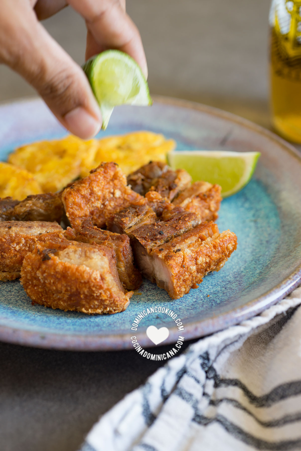

ÍNDICE
- Ingredientes
- Paso a Paso
- Resultado Final
Ingredientes
2 libras de carne de cerdo
Agua
Sal, Pimienta, Oregano
Zumo de naranja
Limón
Paso a Paso
- En un caldero de fondo grueso mezcla la carne de cerdo, agua, sal, orégano, pimienta y naranja.
- Cuece destapado a fuego medio hasta que todo el líquido se haya evaporado (queda algo de la grasa del cerdo).
- Cambia a un caldero de fondo grueso (aluminio o hierro), agrega el aceite y fríe tapado con una rejilla para freír (para evitar salpicaduras, ver notas) hasta que se torne un color dorado oscuro y la piel esté crujiente. Retira del fuego, pon
sobre una toalla de papel y deja enfriar un poco.
- Corta en trocitos de 2 pulgada [5 cm]. Sirve con limón.
Resultado Final
